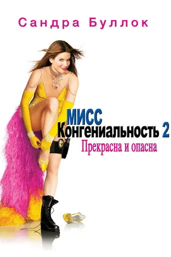

Мисс Конгениальность 2: Прекрасна и опасна 2005
События начинают разворачиваться вскоре после того, как агент ФБР Грейси Харт под видом одной из конкурсанток успешно справляется с важным заданием на конкурсе красоты «Мисс Америка». После своих геройских подвигов, сделавших ее звездой телевидения и прессы, Грейси начинает уделять все меньше времени оперативной работе, занимаясь написанием книги и съемками в различных телешоу. Когда же выясняется, что ее друзей — победительницу конкурса красоты Шерил и импресарио Стэна — похищают в Лас-Вегасе, попытки Грейси вернуться на проторенную стезю и спасти друзей приводят к конфликту с руководством ФБР, которое не хочет терять визитную карточку своей организации в её лице, опасаясь, что она может провалить операцию…
Открыть в каталогеДанные и постеры принадлежат их правообладателям. Этот продукт использует TMDB API, но не одобрен и не сертифицирован TMDB.